Dissonance
Una experiencia de terror cósmico en tres actos: video interactivo, sitio web y realidad virtual cooperativa. Yo construí el Acto II, el sitio de Atlas Corporation: una empresa espacial ficticia que el participante investiga antes de la misión, y en la que nada termina de cuadrar.
DEX · Muestra de Ingeniería en Diseño de Entretenimiento Digital, UPB · 10 nov 2026
-
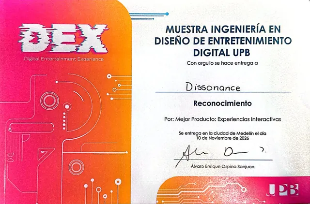
ReconocimientoMejor producto: Experiencias interactivas -
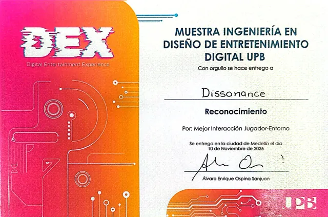
ReconocimientoMejor interacción jugador-entorno -
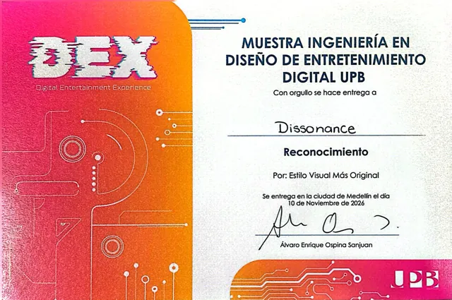
ReconocimientoEstilo visual más original -
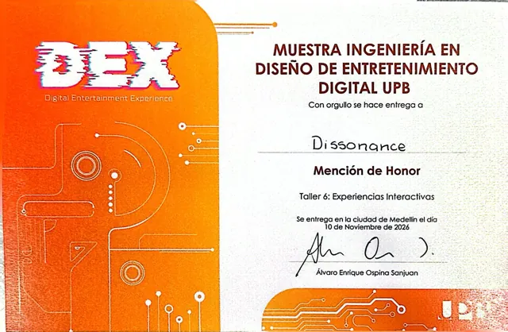
Mención de honorTaller 6: Experiencias interactivas

El proyecto
El participante cree que se está postulando a una misión espacial. A medida que decide, investiga y coopera, aparecen contradicciones que debilitan su confianza en la organización, en la información y en su propia percepción.
-
I
Decidir
Video interactivo
Un comunicado de Atlas presenta la misión y le pide decisiones al espectador.
-
II
Buscar
Sitio web
El participante investiga la empresa por su cuenta. Cuanto más lee, menos encaja.
-
III
Sobrevivir
VR + estación en PC
Un astronauta y un operador en tierra ven cosas distintas y tienen que cooperar.
«¿Cuántas veces podemos mirar al universo antes de que el universo empiece a vernos a nosotros?» Dissonance
El nombre viene de esa grieta entre lo que dice la versión oficial y lo que se observa. La tensión crece poco a poco, con información incompleta y contradicciones, sin sustos ni violencia explícita.
Mi rol
El sitio de Atlas es mío de punta a punta. El resto de la experiencia la pensamos entre los seis.
- Diseño y desarrollo del sitio. Lo construí en HTML, CSS y JavaScript, sin librerías: la interfaz de terminal, el recorrido, los secretos y el sonido.
- Iteración con pruebas. Lo reescribí con lo que vimos en las pruebas con usuarios, hasta dejarlo como el paso entre el video y la experiencia VR/PC.
- Concepto, narrativa y estética. Participé con el equipo en las decisiones de concepto, historia y estilo visual de toda la experiencia.
El resto del equipo llevó la dirección creativa, el diseño de experiencia, el diseño visual, el diseño sonoro y el desarrollo VR. Ver el equipo ↗
Investigación
Antes de diseñar, el equipo investigó qué es lo que asusta del espacio.
- 39
- respuestas de encuesta
- 11
- entrevistas
- 76,9 %
- marcó «sentirse observado» como fuente de miedo, la primera de la lista
El miedo no venía del peligro sino de la incertidumbre. En el sitio, Atlas también observa al visitante: cuenta sus intentos de acceso y le pregunta si escucha algún sonido.
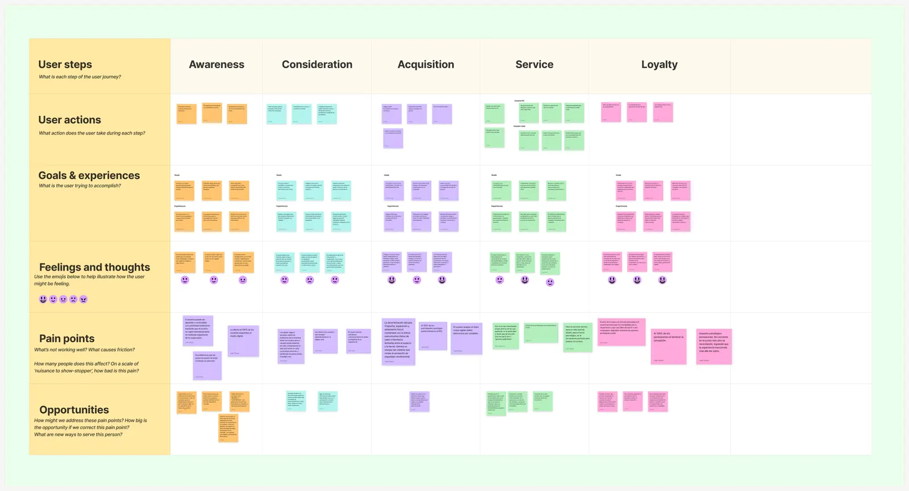
El sitio de Atlas
Un terminal público de 1983 donde Atlas recluta a dos civiles para una misión. Todo está escrito como lo escribiría la empresa; las grietas aparecen cuando el visitante mira con atención.
-
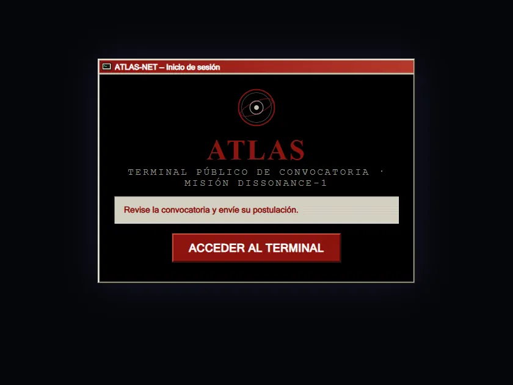
Una interfaz de 1983
Acceso, ventanas con barra de título, barra de tareas e íconos pixelados dibujados en código.
-
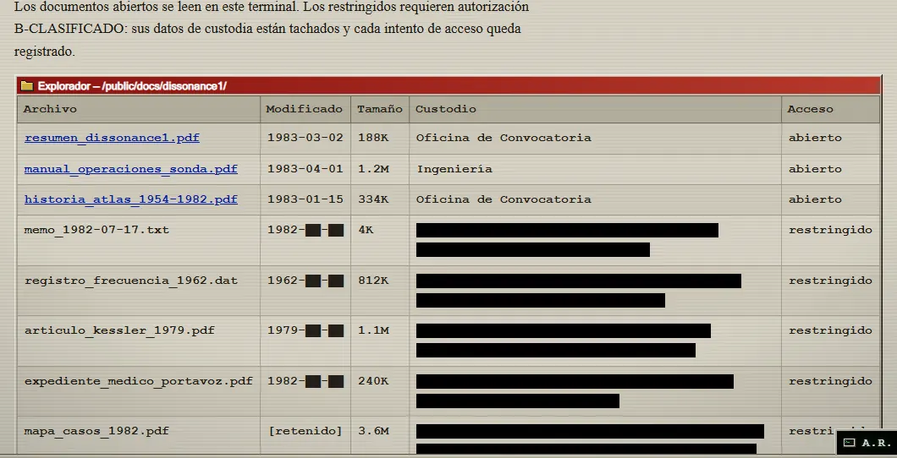
Lo tachado se filtra
Lo censurado se lee seleccionando el texto, y cada intento de abrir un archivo restringido queda registrado.
-
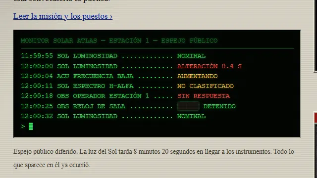
Datos que derivan
La telemetría del Sol se lee normal hasta que pasa de NOMINAL a «NO CLASIFICADO».
-
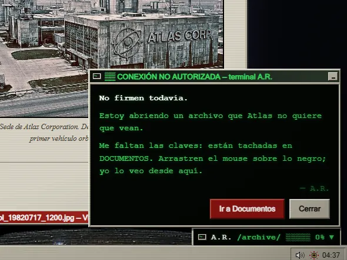
A.R., el que filtra
Alguien toma el canal de avisos de Atlas y pide ayuda para abrir el archivo secreto.
-
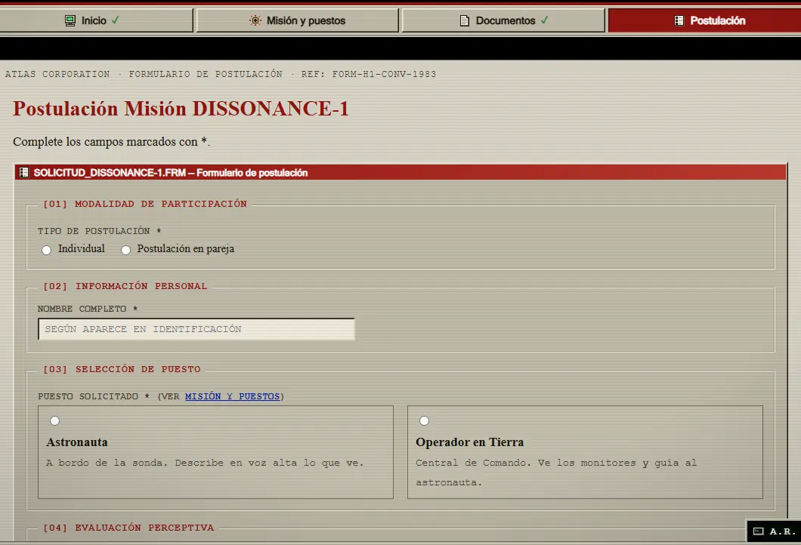
Postularse
El formulario asigna el puesto para el Acto III y calcula un «Índice de Perturbación».
-
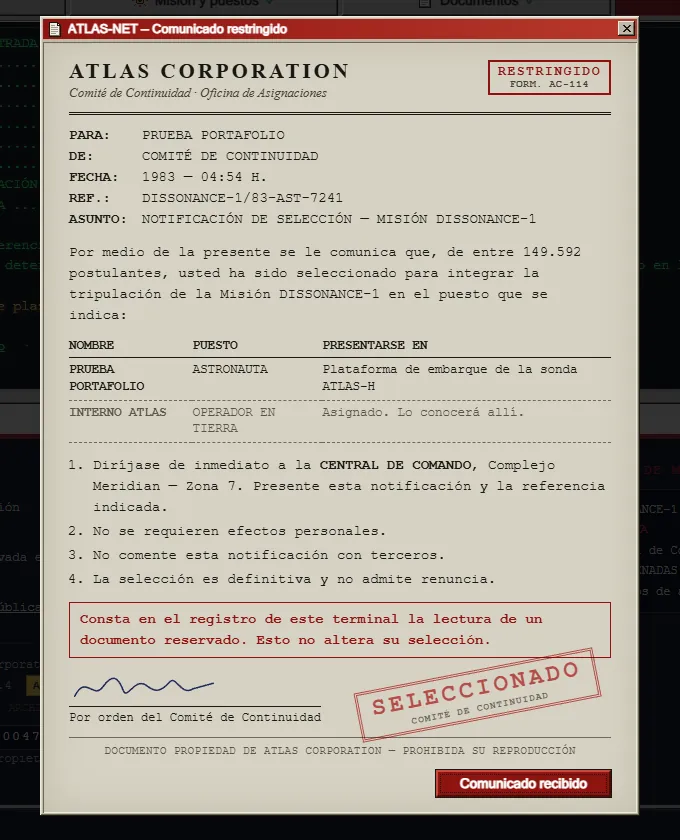
Firmar igual
Al enviar, A.R. muestra el acta secreta. Quien firma igual recibe el memorando: seleccionado, de ahí a la VR.
Todo el sonido (teclas, teletipo, pitidos y estática) se genera en vivo con Web Audio, sin un solo archivo de audio.
Pruebas e iteración
Antes de probar, escribimos qué creíamos que iba a fallar en la web y cómo lo íbamos a comprobar.
-
H1
Nadie entraría a la web después del video.
Prueba: al terminar el video no se les dice nada; se cuenta quién entra por su cuenta y cuánto tarda.
-
H2
Abandonarían la postulación por tener varios pasos.
Prueba: inscribirse pensando en voz alta; se mide quién termina sin ayuda y en qué paso se detiene.
-
H3
La leerían como una página informativa y no como parte de la ficción.
Prueba: tres minutos de exploración libre; se cuentan las secciones visitadas y los secretos encontrados.
En las pruebas el sitio gustaba visualmente, pero tenía demasiado contenido para lo que debía lograr: llegar al formulario tomaba unos 4 minutos. Así que lo recorté. Quité partes, junté secciones y lo convertí en un recorrido de 2 a 3 minutos entre el video inicial y la experiencia VR/PC.
- El menú pasó a ser el procedimiento. De 7 secciones a 4 botones en orden: Inicio, Misión, Documentos y Postulación. La página actual va en rojo y las vistas llevan ✓.
- Menos texto. La misión se lee en tres datos y dos puestos; lo demás quedó plegado en una «letra chica» opcional.
- Un formulario que se entiende. Con el nombre arriba no quedaba claro si iban uno o dos nombres, así que la primera pregunta pasó a ser si se postulan solos o en pareja.
- La verdad, obligatoria. Los secretos siguen siendo para curiosos, pero el acta llega a todos al enviar el formulario: nadie se pierde el giro de la historia.
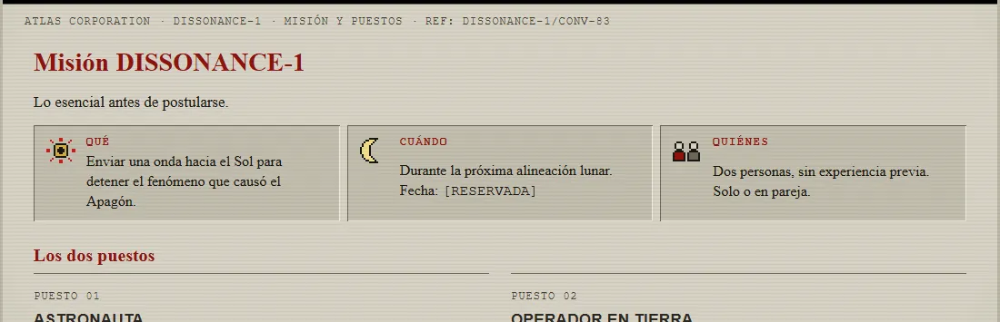
Antes Primera versión
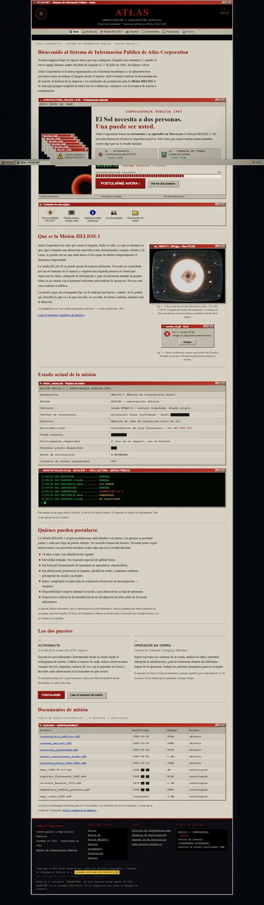
7 secciones · unas 4.800 palabras en todo el sitio
Después Versión final
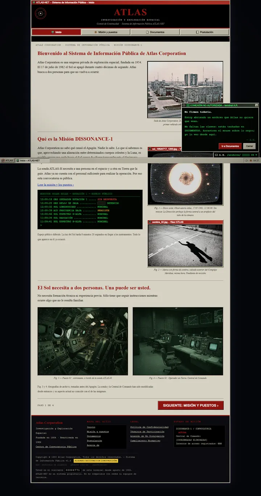
4 pasos · unas 2.700 palabras (−44 %)
Disonancia intencional
Información contradictoria, una percepción que se rompe. Es la historia.
Fricción de usabilidad
No saber qué botón tocar ni qué hacer. No suma al miedo, solo estorba.
La regla que salió de las pruebas: el participante puede dudar de Atlas, pero nunca de la interfaz.
Resultado
Dissonance se presentó en el DEX de noviembre de 2026 y se llevó tres reconocimientos y una mención de honor, entre ellos el de mejor producto de Experiencias interactivas.
«La humanidad creyó que estaba explorando el universo. Pero quizás el universo llevaba mucho tiempo observándola.» Lema de Atlas Corporation